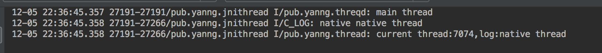
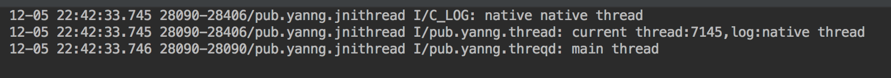

概述
线程是让单个进程并发执行多个任务的机制。它是共享同一个父进程的内存和资源的轻量级进程，一个进程可以包括多个并行执行的线程。作为同一个进程的一部分，线程之间可以批次通信并共享数据。Android支持java和原生代码中的线程。
pthread_create
Android创建线程支持两种方式，一种是我们都很熟悉的java线程，可以直接在java线程中直接执行原生代码。
另外一种就是原生线程POSIX线程。
POSIX线程也被简称为Pthreads，是一个线程的POSIX标准。
头文件：
#include <pthread.h>
创建线程
int pthread_create(pthread_t* thread,
pthread_attr_t const* attr,
void* (*start_routine)(void*),
void* arg);
函数参数说明如下：
- 指向pthread_t 类型变量的指针，函数用该指针返回新线程的句柄。
- 指向pthreadattrt 结构的指针形式存在的新线程属性，可以通过该属性指定新线程的栈基址、栈大小、守护大小、调度策略和调度优先级等。
- 指向线程启动程序的函数指针，启动线程函数签名格式如下： void* start_tountine (void* args)，启动程序将线程参数看成是void指针，返回void指针类型结果。
当线程以空指针的形式执行时，参数都需要被传递给启动程序，如果不需要传递参数，它可以为NULL。
成功时，pthread_create函数返回0，否则返回一个错误代码。
pthread_t thread;
const char *message = "native thread";
int result = pthread_create(&thread,NULL,nativeThread,(void*) message);
if (0 != result){
//获取异常类
jclass exceptionClazz = env->FindClass("java/lang/RuntimeException");
//抛出异常
env->ThrowNew(exceptionClazz, "无法创建线程");
}
示例代码：
static void* printInfo(void* args){
char *message;
message = (char*)args;
printf("%s \n",message);
}
int main(){
pthread_t thread;
const char* message = "native thread";
int result;
result = pthread_create(&thread,NULL,printInfo,(void*) message);
if(0 != result){
printf("ERROR -- pthread_create return code: %d\n",result);
}
}
pthread_join
通过pthread_join函数可以使一个函数等待线程终止。
int pthread_join(pthread_t thread,void** ret_val);
函数参数说明如下：
- 线程句柄，它是pthread_create函数返回的目标线程。
- 指向空指针的指针，该指针是为了从启动程序中获得返回值。
执行pthreadjoin，将挂起调用线程的执行，直到目标线程终止。如果retval不是NULL，该函数将retval指针的值设置为启动程序的返回结果。如果成功，pthreadjoin函数返回值是0，否则它将返回错误代码。
示例代码：
//使用pthread_create所创建的目标线程thread
void* value = NULL;
if(0 != pthread_join(thread,&value)){
printf("ERROR -- unable to join thread. \n");
}else{
printf("join thread returned %d. \n",value);
}
附到Java虚拟机
创建的线程需要依附到java虚拟机上，通过JNI_OnLoad()可以得到指向java虚拟机的指针JavaVM* ，通过JavaVM* 的AttachCurrentThread()函数依附到java虚拟机上。
//Java虚拟机接口指针
static JavaVM* gVm = NULL;
/**
* 使用JNI_OnLoad方法可以获取Java虚拟机接口指针。
* 当共享库开始加载时虚拟机会自动调用该方法。
* @param vm
* @param reserved
* @return
*/
jint JNI_OnLoad(JavaVM* vm,void* reserved){
//缓存Java虚拟机接口指针
gVm = vm;
return JNI_VERSION_1_4;
}
static void* nativeThread(void* args){
JNIEnv* env = NULL;
//将当前线程附加到Java虚拟机上
//并且获取JNIEnv接口指针
if (0 == gVm->AttachCurrentThread(&env,NULL)){
...
//从Java虚拟机中分离当前线程
gVm->DetachCurrentThread();
}
return (void*) 1;
}
Android例子
本例子实现三个native方法，分别是创建POSIX线程方法、初始化方法和释放内存方法。声明如下：
//在Activity的onCreate()方法调用，主要用于native全局变量初始化之类的。
public native void nativeInit();
//在Activity按钮点击调用，主要用于创建native线程。
public native void posixThread();
//在Activity的onDestroy()方法调用，主要用于native释放内存
public native void nativeFree();
native回调方法，在Activity中声明如下方法：
public void onNativeResult(final String log){
//native创建线程成功后会回调此方法
}
native方法实现：
nativeInit()方法代码实现：
static jobject gObj = NULL;
//缓存回调方法的methodID
static jmethodID gOnNativeResult = NULL;
JNIEXPORT void JNICALL
Java_pub_yanng_jnithread_MainActivity_nativeInit(JNIEnv *env, jobject instance) {
//如果全局对象为空，则初始化
if (NULL == gObj){
//为对象创建一个新的全局引用
gObj = env->NewGlobalRef(instance);
if (NULL == gObj){
return;
}
}
//回调方法methodId初始化
if (NULL == gOnNativeResult){
//反射
jclass clazz = env->GetObjectClass(instance);
gOnNativeResult = env->GetMethodID(clazz,"onNativeResult","(Ljava/lang/String;)V");
if (NULL == gOnNativeResult){
//没有声明回调方法
jclass exceptionClazz = env->FindClass("java/lang/RuntimeException");
//抛出异常
env->ThrowNew(exceptionClazz,"没有声明onNativeResult()方法");
return;
}
}
}
nativeFree()方法代码实现：
JNIEXPORT void JNICALL
Java_pub_yanng_jnithread_MainActivity_nativeFree(JNIEnv *env, jobject instance) {
if (NULL != gObj){
//删除引用
env->DeleteGlobalRef(gObj);
gObj = NULL;
}
}
posixThread()方法代码实现：
static void* nativeThread(void* args){
JNIEnv* env = NULL;
if (0 == gVm->AttachCurrentThread(&env,NULL)){
char* message = (char*) args;
LOGI("native %s \n",message);
jstring messageString = env->NewStringUTF(message);
env->CallVoidMethod(gObj,gOnNativeResult,messageString);
gVm->DetachCurrentThread();
}
return (void*) 1;
}
JNIEXPORT void JNICALL
Java_pub_yanng_jnithread_MainActivity_posixThread(JNIEnv *env, jobject instance) {
pthread_t thread;
const char *message = "native thread";
int result = pthread_create(&thread,NULL,nativeThread,(void*) message);
if (0 != result){
//获取异常类
jclass exceptionClazz = env->FindClass("java/lang/RuntimeException");
//抛出异常
env->ThrowNew(exceptionClazz, "无法创建线程");
}
//pthread_join()示例代码
void* value = NULL;
if(0 != pthread_join(thread,&value)){
//获取异常
jclass exceptionClazz = env->FindClass("java/lang/RuntimeException");
//抛出异常
env->ThrowNew(exceptionClazz,"unable to join thread");
return;
}
}
注意在ndk忘了多少版本后，使用pthread_create会报too many arguments,expect 1。原因是大概是_Nonnull找不到宏定义，这个刚开始被坑了很久，最后在stackoverflow找到解决方案。
解决方案：
在c文件的最前，加入以下声明：
#ifndef _Nonnull
#define _Nonnull
#endif
app的build.gradle添加如下代码：
android {
...
defaultConfig {
...
externalNativeBuild {
ndkBuild{
arguments "APP_DEPRECATED_HEADERS=true"
}
cmake {
cppFlags ""
}
}
}
}
再Sync Now 后就不报错啦~
运行结果：
当上面注释掉pthread_join的示例代码，运行结果如下：

可以看到日志输出是先输出主线程的Log，再输出native线程的日志，最后是native线程回调方法的日志输出。
再把pthread_join的示例代码打开，再一次运行，运行结果如下：

此时，先输出的是native方法的日志，然后是native线程回调方法的日志输出，最后才是主线程的日志输出。
完整代码：